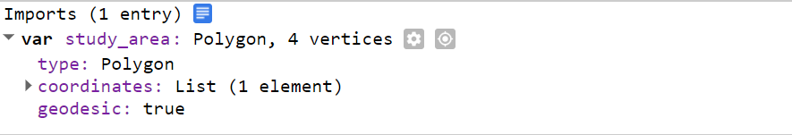
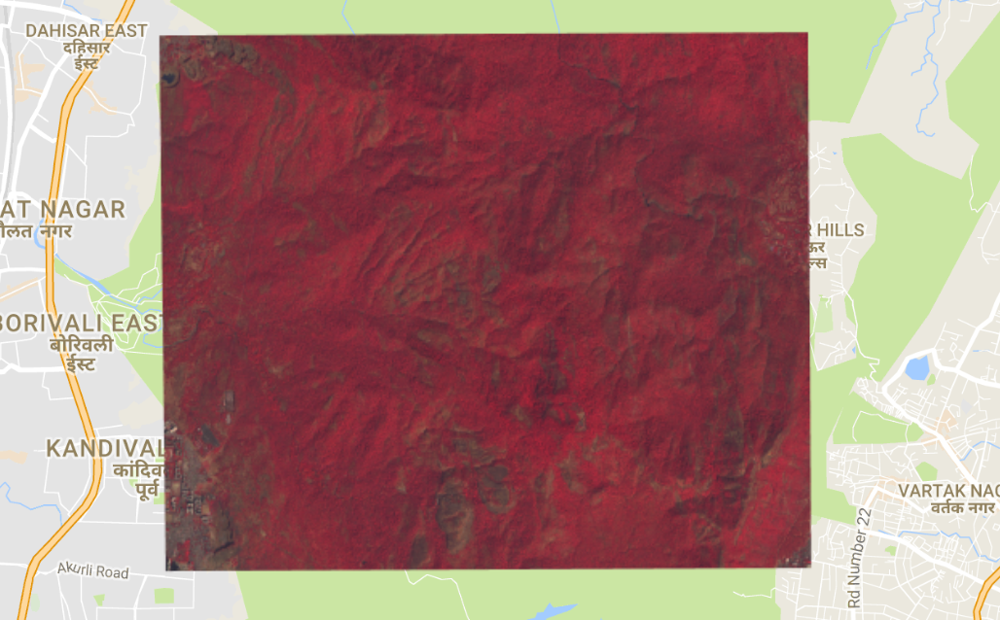
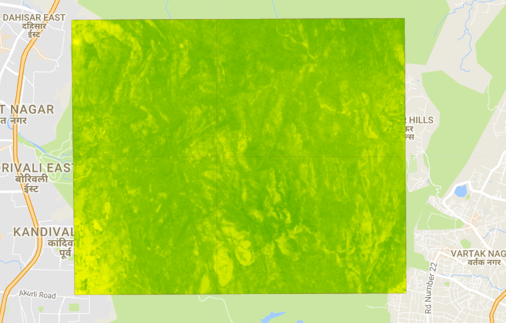
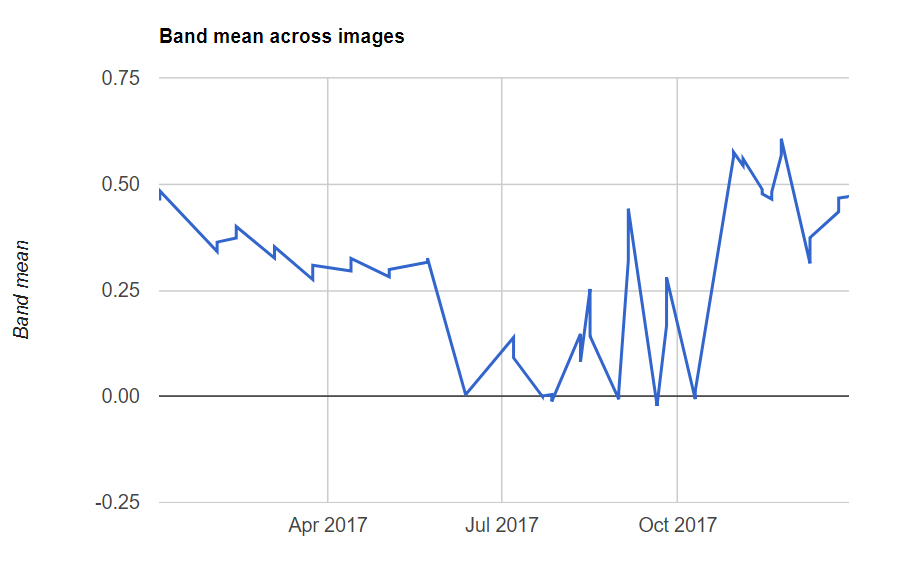
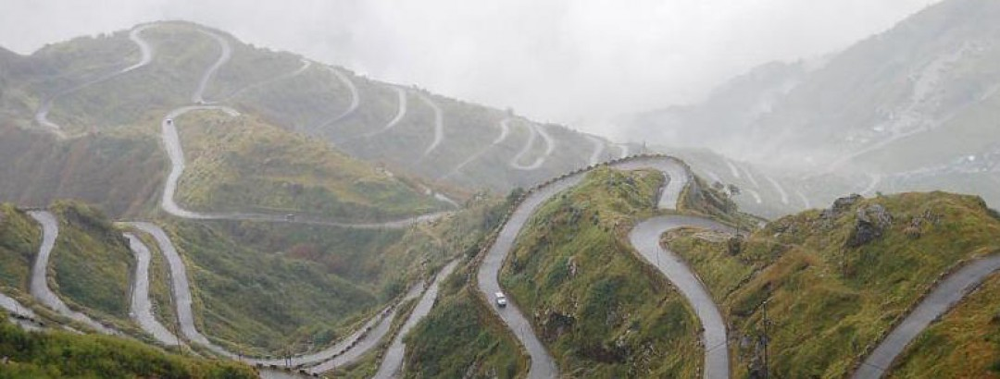

Google Earth Engine For Image Analysis
Creating NDVI Layer and calculating its moving average
NDVI is one of the most widely used index for spectral image analysis. On this tutorial, we will take a look at the steps to create an NDVI layer and a time-series chart depicting its pattern over time. To begin with, let's go ahead and load the Sentinel
2 images.
//Sentinel-2 TOA reflectance Image
var S2 = ee.ImageCollection('COPERNICUS/S2');
For this excercise, we will examine the greeness pattern of a national park located north of Mumbia.

Our study area is identified by the "Red" mask covering part of Sanjay Gandhi National Park.

The next step of the analysis involves removing (masking) the cloud cover.
Sentinel-2 comes with dense clouds and cirrus clouds masks at 60 m spatial
resolution and with the following function, we will combine the two,
mask the original image and return a scaled layer.
// Function to mask clouds using the Sentinel-2 QA band.
function maskS2clouds(image) {
// Get QA bands with 60 meters resolution
var qa = image.select('QA60');
var cloudBitMask = ee.Number(2).pow(10).int();
var cirrusBitMask = ee.Number(2).pow(11).int();
// Create mask using the Bit-Wise 'AND' Operator
var mask = qa.bitwiseAnd(cloudBitMask).eq(0).and(
qa.bitwiseAnd(cirrusBitMask).eq(0));
// Return the masked and scaled image
return image.updateMask(mask).divide(10000)
.copyProperties(image, ["system:time_start"]);
}
Next, we will use this masking variable and filtering functions to create
the final image.
// Filter and pre-process
var S2_preProcessed = S2.filterDate('2017-01-01', '2017-12-31')
.filter(ee.Filter.lt('CLOUDY_PIXEL_PERCENTAGE', 3))
.map(maskS2clouds)
.median() // Return the Median Value
The pre-processing involved filtering the original image collection by
a specific date (2017) percent of cloud cover (3), cloud mask (mask2clouds) and,
finally, the median values. Next, we will select the 4 bands with 10 meters
resolution and clip scene image to the study area.
//Bands with 10 meters resolution
var bands = ['B2', 'B3', 'B4', 'B8'];
// Select bands and location of the study area
var image = S2_preProcessed.select(bands)
.clip(study_area);
Let's go ahead and visualize the image.
// Visualize False-Color Composite
Map.addLayer(image,
{bands: ['B8', 'B4', 'B3'],
max: 0.4}, 'Sentinel 2');

Now that we correctly depicted the image, lets create the NDVI layer.
To do so, we'll call the 'normalizedDifference' function on the NIR (B8) and Red (B4) Bands.
// NDVI Layer
var ndvi_layer = image.normalizedDifference(['B8', 'B4'])
// Visualize NDVI
Map.addLayer(ndvi_layer,
{min: -1, max: 1,
palette: ['red', 'yellow', 'green']},
'NDVI');

The NDVI image show the geography of the vegetation cover and to understand
the change in its greeness over time, we can calculate and plot a time-series chart.
// Run NDVI on image with no cloud mask
var ndvi_report = S2.filterDate('2017-01-01', '2017-12-31')
.map(addNDVI)
// plot the average ndvi value
print(ui.Chart.image.series({
imageCollection: ndvi_report.select('nd'),
region: study_area,
reducer: ee.Reducer.mean()
}))

Sanjay Gandhi National Park

image credit: "https://sanjaygandhinationalpark.wordpress.com/"